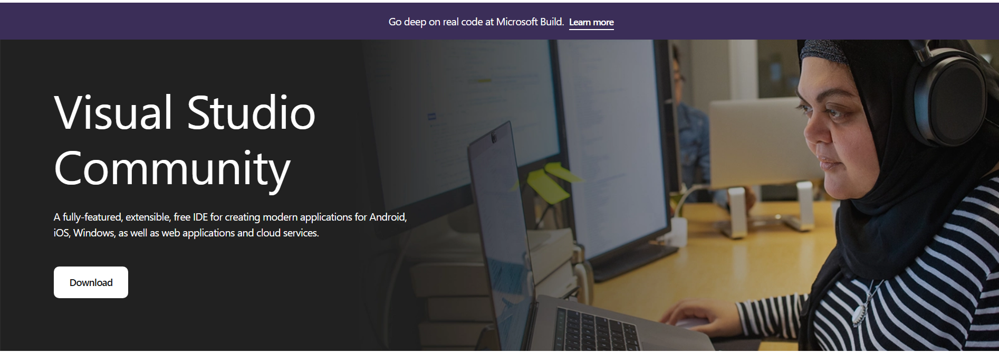
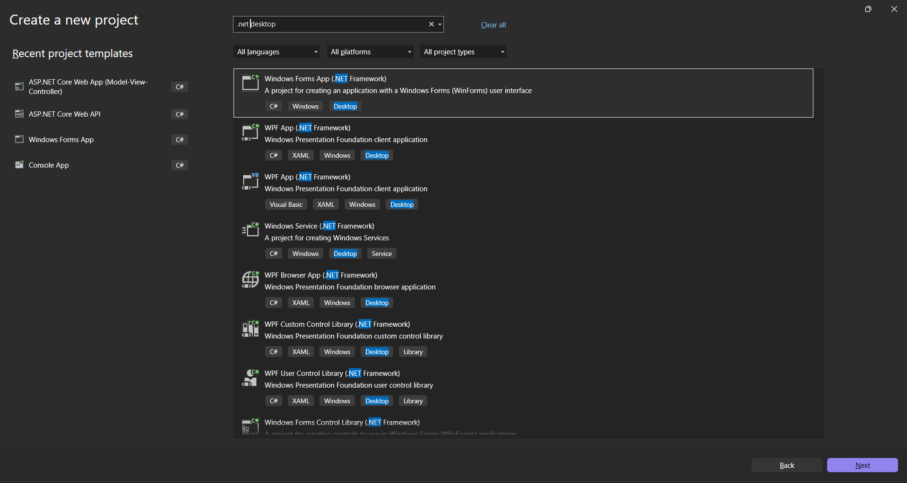
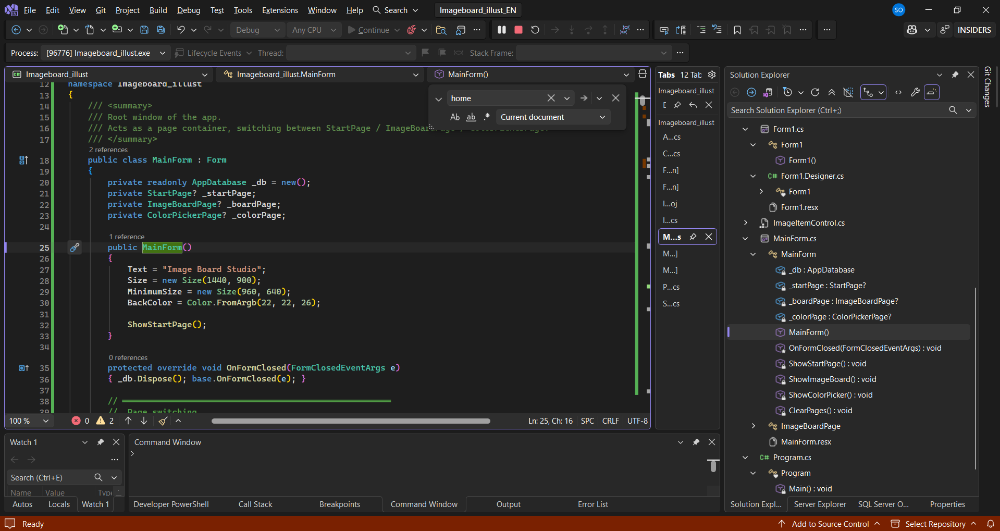

Building an Artist Tool
In this tutorial you will build Image Board Studio from scratch — a desktop app for artists to collect visual references and pick colors from images. No coding experience needed. Every step is explained.
What is C#? C# (pronounced "C sharp") is a programming language made by Microsoft. It is one of the most popular languages for building Windows desktop apps.
What is Windows Forms? Windows Forms (WinForms) is a toolkit that comes with C#. It lets you build windows with buttons, panels, and images by writing code instead of dragging things in a designer.
What is SQLite? SQLite is a tiny database that saves data into a single file on your computer — like a spreadsheet, but for your app. No setup or server needed.
What You'll Build
The finished app has three screens the user can switch between:
- Start Page — a landing screen with two clickable mode cards
- Image Board — a large scrollable canvas where you drag, drop, and resize images. Boards are saved to a database so they persist when you close the app.
- Color Picker — load any image and click on it to sample colors. Build a reusable palette and copy the hex codes.
Project Structure
Here is every file in the finished project. Don't worry about understanding all of it now — you will create each file step by step. This is just a map so you know where you are headed.
Step 1 — Install Visual Studio
Visual Studio is the program you write C# code in. Think of it like Microsoft Word, but for code. We use the free Community edition — it has everything we need and costs nothing.
Open your browser and go to:
Click the Download button. The page will immediately confirm the download has started:

This downloads a small file called VisualStudioSetup.exe. If the download doesn't start automatically, click the "click here to retry" link on that page. Run the file to launch the installer.
The installer opens a Workloads screen — a list of tool bundles for different project types. You will see sections called Web & Cloud and Desktop & Mobile.
Scroll down to Desktop & Mobile and check only this one:

Click Install at the bottom right. This takes 10–20 minutes depending on your internet speed. When it finishes, click Launch.
Visual Studio will ask you to sign in with a Microsoft account. This is optional — click "Not now, maybe later" to skip it. The app is completely free without signing in.
Click the blue Install button at the bottom right of the installer. The download and setup takes 10–20 minutes depending on your internet speed. You can see the progress in the installer window.
When it finishes, click Launch to open Visual Studio for the first time.
Visual Studio will ask you to sign in with a Microsoft account. This is optional — click "Not now, maybe later" to skip it. The app is completely free without signing in.
Step 2 — Create the Project
A project is the folder that holds all your code files. A solution is a container that holds one or more projects. Visual Studio creates both at once.
On the Visual Studio start screen, click Create a new project. In the search box at the top, type Windows Forms. Select the template that says:
Make sure the small tag says C# (not Visual Basic). Click Next.
Fill in the details exactly like this:
- Project name:
Imageboard_illust - Location: anywhere you like (e.g. your Desktop or Documents)
- Framework:
.NET 10.0 (Windows)
Click Create. Visual Studio generates the project and opens it.
In the Solution Explorer panel (right side), you'll see two auto-generated files:
Form1.cs— a blank window. We will keep this for now.Program.cs— the entry point. This is the first code that runs when you press Play.
Step 3 — Create Folders & Files
Before writing any code, create the folder and file structure. Right-clicking in Solution Explorer is how you add everything.
In Solution Explorer, right-click the project name (Imageboard_illust) → Add → New Folder → type Database → press Enter.
Then right-click the Database folder → Add → Class… → name it AppDatabase.cs → click Add.
Same steps: right-click the project → Add → New Folder → name it Models. Then right-click the Models folder → Add → Class… → name it Models.cs.
Right-click the project (not a folder) → Add → Class… for each of these files:
StartPage.csImageItemControl.csColorPickerPage.csExportOptionsDialog.csMainForm.cs
When done, your Solution Explorer should match the project structure shown in the introduction.
Step 4 — Install the SQLite Package
Your project needs a library to talk to SQLite. Libraries in C# are installed through NuGet, which is like an app store for code packages. Your project uses version 10.0.5 (visible in your Solution Explorer under Packages).
In the top menu bar, click:
A new tab opens showing packages you can install.
Click the Browse tab. In the search box type Microsoft.Data.Sqlite. Click the first result. On the right side, check the box next to your project name. Click Install and accept any prompts.
Step 5 — Understanding Visual Studio's UI
Before writing code, take 5 minutes to get familiar with the panels. The diagram below maps the key areas — each number matches the description below it.

Everything in Visual Studio lives here. The most important for this project: View (to restore panels), Build (to compile), and Debug (to run).
The green ▶ Continue button runs your app (same as F5). The red square stops it (ShiftF5).
Click any tab to switch to that file. Middle-click (or click the ✕) to close it.
Line numbers are on the left. Keywords are coloured (purple/blue). Errors show as red underlines. Press CtrlSpace to force an autocomplete suggestion.
Error List — all compile errors. Double-click any error to jump to it.
Output — build messages and logs.
Developer PowerShell / Terminal — built-in command prompt.
Click any
.cs file to open it. Click the arrow to expand and see classes and methods. Right-click to add, rename, or delete files.
Panels can be accidentally closed or moved. If anything is missing, go to in the menu bar and click the panel you want back. Every panel in Visual Studio is listed there with its keyboard shortcut.
| Panel | Shortcut |
|---|---|
| Solution Explorer | CtrlAltL |
| Error List | Ctrl\ E |
| Output | CtrlAltO |
| Terminal | Ctrl` |
| Git Changes | Ctrl0 G |
- F5 — build and run (opens the app window)
- ShiftF5 — stop the app
- CtrlShiftB — build without running (checks for errors only)
Part 1 — Data Models
A model is a C# class that describes the shape of your data — like a form defining what fields exist. Open Models/Models.cs and replace all the content with the code below.
Two classes are defined: Board (one named workspace, like a Photoshop document) and BoardItem (a single image card placed on a board, with its position, size, and file reference).
namespace Imageboard_illust.Models
{
/// <summary>
/// One image board (1 board = 1 workspace).
/// Represents a row in the boards table.
/// </summary>
public class Board
{
public int Id { get; set; }
public string Name { get; set; } = "";
public string CreatedAt { get; set; } = "";
/// <summary>Folder path where this board's images are stored.</summary>
public string ImagesDir(string dataDir)
=> System.IO.Path.Combine(dataDir, "boards", Id.ToString(), "images");
}
/// <summary>
/// One image card on a board.
/// Represents a row in the board_items table.
/// </summary>
public class BoardItem
{
public int Id { get; set; }
public int BoardId { get; set; }
public string Name { get; set; } = "";
public string FileName { get; set; } = "";
public int X { get; set; }
public int Y { get; set; }
public int Width { get; set; }
public int Height { get; set; }
public int ZOrder { get; set; }
public string CreatedAt { get; set; } = "";
public string FullPath(string dataDir, int boardId)
=> System.IO.Path.Combine(dataDir, "boards", boardId.ToString(), "images", FileName);
}
}Part 2 — Database
Open Database/AppDatabase.cs. This class handles all reading and writing to the SQLite file. It opens one connection when the app starts and keeps it open until the app closes — no re-connecting on every query.
The database file is saved to %AppData%\Imageboard_illust\board.db automatically. Images are stored as separate PNG files in a boards\ subfolder next to the database.
The constructor locates AppData, creates the folder and .db file, then calls EnsureSchema(). WAL mode and foreign keys are switched on immediately after connecting — these stay active for the lifetime of the connection.
public AppDatabase()
{
DataDir = Path.Combine(
Environment.GetFolderPath(Environment.SpecialFolder.ApplicationData),
"Imageboard_illust");
_dbPath = Path.Combine(DataDir, "board.db");
Directory.CreateDirectory(DataDir);
Open();
EnsureSchema();
}
private void Open()
{
_conn = new SqliteConnection($"Data Source={_dbPath}");
_conn.Open();
Exec("PRAGMA journal_mode=WAL;");
Exec("PRAGMA synchronous=NORMAL;");
Exec("PRAGMA foreign_keys=ON;");
}CREATE TABLE IF NOT EXISTS is safe to call every time — it only creates the table if it doesn't exist yet. ON DELETE CASCADE means deleting a board automatically deletes all its image cards.
private void EnsureSchema()
{
Exec(@"
CREATE TABLE IF NOT EXISTS boards (
id INTEGER PRIMARY KEY AUTOINCREMENT,
name TEXT NOT NULL DEFAULT 'New Board',
created_at TEXT NOT NULL DEFAULT (datetime('now','localtime'))
);
CREATE TABLE IF NOT EXISTS board_items (
id INTEGER PRIMARY KEY AUTOINCREMENT,
board_id INTEGER NOT NULL REFERENCES boards(id) ON DELETE CASCADE,
name TEXT NOT NULL DEFAULT '',
file_name TEXT NOT NULL DEFAULT '',
x INTEGER NOT NULL DEFAULT 0,
y INTEGER NOT NULL DEFAULT 0,
width INTEGER NOT NULL DEFAULT 300,
height INTEGER NOT NULL DEFAULT 250,
z_order INTEGER NOT NULL DEFAULT 0,
created_at TEXT NOT NULL DEFAULT (datetime('now','localtime'))
);
");
}All queries use parameterised commands ($n, $id etc.) — never string interpolation. This prevents SQL injection and handles special characters safely.
// Load all boards ordered by id
public List<Board> LoadAllBoards()
{
var list = new List<Board>();
using var cmd = Cmd("SELECT id, name, created_at FROM boards ORDER BY id;");
using var r = cmd.ExecuteReader();
while (r.Read())
list.Add(new Board { Id = r.GetInt32(0), Name = r.GetString(1), CreatedAt = r.GetString(2) });
return list;
}
// Insert a new board and return its auto-assigned id
public int InsertBoard(string name)
{
using var cmd = Cmd("INSERT INTO boards (name) VALUES ($n); SELECT last_insert_rowid();");
cmd.Parameters.AddWithValue("$n", name);
return Convert.ToInt32(cmd.ExecuteScalar());
}
// Delete a board — ON DELETE CASCADE removes its items too
public void DeleteBoard(int boardId)
{
using var cmd = Cmd("DELETE FROM boards WHERE id=$id;");
cmd.Parameters.AddWithValue("$id", boardId);
cmd.ExecuteNonQuery();
}
// Update an item's position and size after a drag or resize
public void UpdateItemLayout(int id, int x, int y, int width, int height, int zOrder)
{
using var cmd = Cmd(@"UPDATE board_items
SET x=$x, y=$y, width=$w, height=$h, z_order=$z WHERE id=$id;");
cmd.Parameters.AddWithValue("$x", x);
cmd.Parameters.AddWithValue("$y", y);
cmd.Parameters.AddWithValue("$w", width);
cmd.Parameters.AddWithValue("$h", height);
cmd.Parameters.AddWithValue("$z", zOrder);
cmd.Parameters.AddWithValue("$id", id);
cmd.ExecuteNonQuery();
}Part 3 — Start Page
Open StartPage.cs. This is the landing screen — a Panel that fills the window and shows two clickable mode cards. When a card is clicked it fires an event that MainForm listens to.

Events let one class tell another "something happened" without them knowing about each other. MainForm subscribes to these events and swaps the page when they fire.
public class StartPage : Panel
{
public event EventHandler? ImageBoardChosen;
public event EventHandler? ColorPickerChosen;
}The Paint event fires every time the panel redraws. We fill with a gradient then draw a 32px dot grid over it using a semi-transparent brush.
Paint += (_, e) =>
{
using var br = new LinearGradientBrush(
ClientRectangle,
Color.FromArgb(22, 22, 28),
Color.FromArgb(30, 28, 38),
LinearGradientMode.ForwardDiagonal);
e.Graphics.FillRectangle(br, ClientRectangle);
using var dot = new SolidBrush(Color.FromArgb(35, 255, 255, 255));
const int gap = 32;
for (int x = gap; x < Width; x += gap)
for (int y = gap; y < Height; y += gap)
e.Graphics.FillEllipse(dot, x-1, y-1, 2, 2);
};Each card is a Panel with a custom Paint handler that draws a rounded-rect border using GraphicsPath. The MouseEnter/MouseLeave events change the background colour for the hover effect.
card.Paint += (s, e) =>
{
var g = e.Graphics;
var rc = ((Panel)s!).ClientRectangle;
g.SmoothingMode = SmoothingMode.AntiAlias;
using var bgBrush = new SolidBrush(card.BackColor);
FillRoundRect(g, bgBrush, rc, 12); // filled background
using var pen = new Pen(borderColor, 1.5f);
DrawRoundRect(g, pen, rc, 12); // coloured border
};
card.MouseEnter += (_, _) => { card.BackColor = Color.FromArgb(44, 44, 52); card.Invalidate(); };
card.MouseLeave += (_, _) => { card.BackColor = Color.FromArgb(36, 36, 42); card.Invalidate(); };Part 4 — Image Item Control
Open ImageItemControl.cs. This is one draggable image card on the canvas — a Panel subclass with its own title bar, close button, 8-directional resize handles, and a right-click context menu.

An enum is a named list of options. ResizeDir describes which edge or corner the user is currently dragging.
private enum ResizeDir
{
None,
N, S, E, W, // top, bottom, right, left edges
NE, NW, SE, SW // corners
}private ResizeDir GetResizeDirFromPanel(Point p)
{
int x = p.X, y = p.Y, w = Width, h = Height;
bool nearL = x <= CornerSz, nearR = x >= w - CornerSz;
bool nearT = y <= CornerSz, nearB = y >= h - CornerSz;
if (nearT && nearL) return ResizeDir.NW;
if (nearT && nearR) return ResizeDir.NE;
if (nearB && nearL) return ResizeDir.SW;
if (nearB && nearR) return ResizeDir.SE;
if (y <= EdgeSz) return ResizeDir.N;
if (y >= h - EdgeSz) return ResizeDir.S;
if (x <= EdgeSz) return ResizeDir.W;
if (x >= w - EdgeSz) return ResizeDir.E;
return ResizeDir.None;
}On MouseDown in the title bar we record where the drag started. On MouseMove we update the card's position by the delta.
private void TitleBar_Down(object? s, MouseEventArgs e)
{
if (e.Button != MouseButtons.Left) return;
BringToFrontRequested?.Invoke(this, EventArgs.Empty);
_isDragging = true;
_dragStartScreen = Scr(s, e.Location);
_dragStartLocation = Location;
}
private void TitleBar_Move(object? s, MouseEventArgs e)
{
if (!_isDragging || Parent == null) return;
var sc = Scr(s, e.Location);
Location = new Point(
Math.Max(0, _dragStartLocation.X + sc.X - _dragStartScreen.X),
Math.Max(0, _dragStartLocation.Y + sc.Y - _dragStartScreen.Y));
}Right-clicking a card and choosing Crop… opens CropDialog — a resizable form with a live preview, rule-of-thirds grid, and 8 drag handles. The crop is applied by drawing the selected region onto a new Bitmap.

private void BtnOk_Click(object? s, EventArgs e)
{
double scaleX = (double)_src.Width / _imgRect.Width;
double scaleY = (double)_src.Height / _imgRect.Height;
var srcRect = new Rectangle(
(int)((_cropRect.X - _imgRect.X) * scaleX),
(int)((_cropRect.Y - _imgRect.Y) * scaleY),
(int)(_cropRect.Width * scaleX),
(int)(_cropRect.Height * scaleY));
var bmp = new Bitmap(srcRect.Width, srcRect.Height);
using var g = Graphics.FromImage(bmp);
g.DrawImage(_src, new Rectangle(0, 0, bmp.Width, bmp.Height),
srcRect, GraphicsUnit.Pixel);
CroppedImage = bmp;
DialogResult = DialogResult.OK;
}Part 5 — Image Board
The ImageBoardPage class (inside MainForm.cs) is the main workspace. It builds the toolbar, a split sidebar with board and image lists, a large scrollable canvas, and a status bar.

The canvas is a Panel with AutoScroll = true and a large virtual size. The Paint handler draws a subtle grid by offsetting the lines by the current scroll position — so the grid stays still relative to the content as you scroll.
_canvas = new Panel
{
Dock = DockStyle.Fill,
AutoScroll = true,
AutoScrollMinSize = new Size(4000, 3000),
BackColor = Color.FromArgb(40, 40, 43),
AllowDrop = true,
};
_canvas.Paint += (_, e) =>
{
const int G = 40;
using var p = new Pen(Color.FromArgb(50, 50, 53), 1);
int ox = _canvas.AutoScrollPosition.X % G;
int oy = _canvas.AutoScrollPosition.Y % G;
for (int x = ox; x < _canvas.Width; x += G) e.Graphics.DrawLine(p, x, 0, x, _canvas.Height);
for (int y = oy; y < _canvas.Height; y += G) e.Graphics.DrawLine(p, 0, y, _canvas.Width, y);
};Zoom works by storing a _zoom float and rescaling every card's Location and Size. The actual Item.X / Item.Y values are always stored at 100% scale — the zoom is applied on top for display only.
_canvas.MouseWheel += (_, e) =>
{
if (ModifierKeys.HasFlag(Keys.Control))
SetZoom(_zoom + (e.Delta > 0 ? +ZoomStep : -ZoomStep));
};
private void ApplyZoomToAllCards()
{
foreach (var card in _cards.Values)
{
card.Location = new Point((int)(card.Item.X * _zoom), (int)(card.Item.Y * _zoom));
card.Size = new Size((int)(card.Item.Width * _zoom), (int)(card.Item.Height * _zoom));
}
}The canvas accepts drag-and-drop of files or bitmap data. Clipboard paste (CtrlV) is handled by a global keyboard hook so it works even if the canvas isn't focused.
private void Canvas_DragDrop(object? s, DragEventArgs e)
{
if (!EnsureBoard()) return;
if (e.Data?.GetDataPresent(DataFormats.FileDrop) == true)
{
var files = e.Data.GetData(DataFormats.FileDrop) as string[];
if (files != null) foreach (var f in files) AddFromFile(f);
}
}Part 6 — Color Picker
Open ColorPickerPage.cs. It loads an image into a PictureBox and reads the pixel color wherever the mouse is. The NativeMethods class at the bottom of the file wraps the Win32 GetAsyncKeyState API for the eyedropper's Escape key detection.

When SizeMode is Zoom, WinForms letterboxes the image. We must account for the offset and scale when converting the mouse position into actual bitmap pixel coordinates.
private void PicBox_MouseMove(object? s, MouseEventArgs e)
{
if (_picBox.Image == null) return;
var bmp = new Bitmap(_picBox.Image);
var c = bmp.GetPixel(
e.X * bmp.Width / _picBox.Width,
e.Y * bmp.Height / _picBox.Height);
_hoveredSwatch.BackColor = c;
_hoveredColorLbl.Text = $"#{c.R:X2}{c.G:X2}{c.B:X2}";
}e.X and e.Y before the calculation above.Before adding a color, the palette is checked for an exact RGB match. If found, a short amber tip message flashes in the toolbar label instead of silently ignoring the click.
private void AddColorToPalette(Color c)
{
if (_palette.Contains(c))
{
Tip("Already in palette.");
return;
}
_palette.Add(c);
RebuildSwatches();
}Each swatch registers two handlers: a Click for the #-prefixed value and a MouseDown for the bare hex string (useful for tools like Figma that don't expect the #).
EventHandler copyWithHash = (_, _) =>
{
Clipboard.SetText(hex);
hexLbl.Text = "Copied #!";
var t = new Timer { Interval = 1200 };
t.Tick += (_, _) => { hexLbl.Text = hex; t.Stop(); t.Dispose(); };
t.Start();
};
MouseEventHandler copyNoHash = (_, me) =>
{
if (me.Button != MouseButtons.Right) return;
Clipboard.SetText(hexOnly);
hexLbl.Text = "Copied!";
var t = new Timer { Interval = 1200 };
t.Tick += (_, _) => { hexLbl.Text = hex; t.Stop(); t.Dispose(); };
t.Start();
};Part 7 — Main Form
Open MainForm.cs. This is the root window of the app. It owns the single AppDatabase instance and acts as a page router — swapping between StartPage, ImageBoardPage, and ColorPickerPage by disposing the current page and adding the new one.
MainForm holds exactly four fields and four methods. It disposes the database in OnFormClosed so the SQLite file is properly flushed and closed when the window closes.
public class MainForm : Form
{
private readonly AppDatabase _db = new();
private StartPage? _startPage;
private ImageBoardPage? _boardPage;
private ColorPickerPage? _colorPage;
public MainForm()
{
Text = "Image Board Studio";
Size = new Size(1440, 900);
MinimumSize = new Size(960, 640);
BackColor = Color.FromArgb(22, 22, 26);
ShowStartPage();
}
protected override void OnFormClosed(FormClosedEventArgs e)
{ _db.Dispose(); base.OnFormClosed(e); }
}ClearPages() disposes every control in the window — this is important because Panel subclasses hold GDI resources (fonts, brushes, timers) that must be released. Then the new page is created, its events are wired up, and it is added to the form.
private void ShowStartPage()
{
ClearPages();
_startPage = new StartPage();
_startPage.ImageBoardChosen += (_, _) => ShowImageBoard();
_startPage.ColorPickerChosen += (_, _) => ShowColorPicker();
Controls.Add(_startPage);
}
private void ShowImageBoard()
{
ClearPages();
_boardPage = new ImageBoardPage(_db);
_boardPage.HomeRequested += (_, _) => ShowStartPage();
Controls.Add(_boardPage);
Text = "Image Board Studio — Image Board";
}
private void ClearPages()
{
foreach (Control c in Controls) c.Dispose();
Controls.Clear();
_startPage = null; _boardPage = null; _colorPage = null;
}